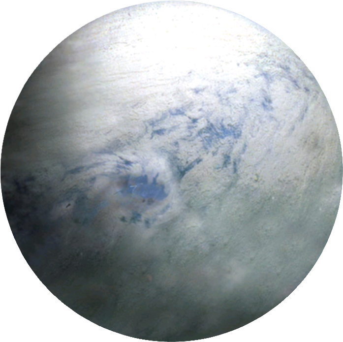
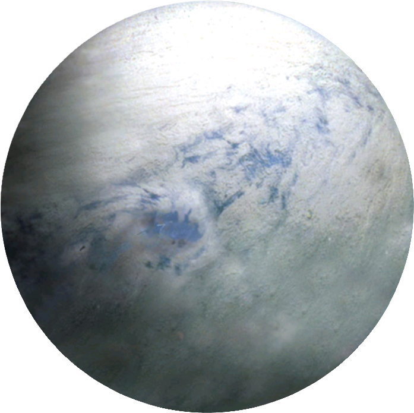

La base est très importante, elle doit s'adapter à la circonférence de votre planète. Si elle n'est pas totalement ronde alors adaptez vous. Il faudrait construire votre structure avec des matériaux très résistant bien sûr, ne risque pas de se fendre à la moindre explosion. Il est aussi conseillé d'avoir un matériaux renvoyant les tires de blaster.
Parlons maintenant de l'installation de l'armement. Votre arme est destinée à exterminer des planètes, systèmes ou d'autre éléments perturbateurs. C'est une étape très importante. Vous aurez besoin d'ingénieurs qui sâches élaborer une telle machine sans faire péter la base avant son achèvement.
 


Dans ma grande bonté, je vous offre des plans pour bâtir ce merveilleux endroit. Bien sûr il faut un certain talent pour réussir à les déchiffrer. Demander à un ingénieur.
Cependant, la planète que vous allez prendre n'aura bien sûr pas les mêmes dimensions que l'originale. Il vous faut donc aussi un bon architecte pour ajuster les côtes. Cela demandera un grand travail de préparation mais ça en vaux la chandelle croyez moi.


Si vous n'êtes pas chanceux comme moi, vous allez devoir creuser un trou assez grand pour y placer le canon de votre arme. C'est une étape qui demande beaucoup de temps, de main d'oeuvre et de précautions. Quand l'orifice sera prêt il vous suffira de fabriquer sur place la super arme.
Avec une dizaine de cristaux Kyber et un réacteur suffisament puissant vous parviendrez à fabriquer le coeur de l'arme. Cependant c'est toujour un procédé très dangereux car si les cristaux sont stressés ils risque d'exploser et votre base avec. Les paroies du cannon doivent aussi être faite d'un matériaux résistant pour supporter le choc d'une telle arme.